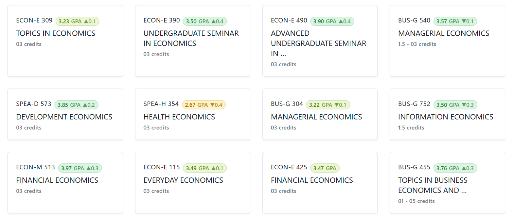
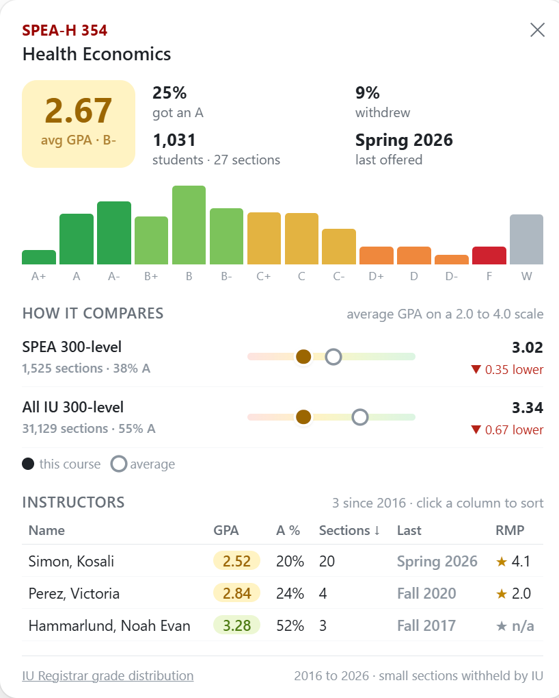

Welcome to IU Enrollment Plus
IU Enrollment Plus adds real grade distributions and professor ratings to every course in Stellic.
Load the grade data
This extension does not include any grade data. A valid IU login is required to download the grade distributions from the IU Registrar through your own account. Sign in once, then load them. They are saved only in this browser.
-
Pin it to your toolbar
Click the puzzle piece icon at the top right of your browser, then the pin next to IU Enrollment Plus. Its button opens course search and settings.
-
Find the badges
Every course code in Stellic gets a badge with its average GPA since 2016. Green grades high, red grades low, and the arrow compares it to its department at the same level.

-
Hover for the details
Hover a badge to see the grade histogram, how it compares, and every instructor with their GPA and RateMyProfessors rating. Click the badge to keep the card open.

-
Pick your section
Open a course and each instructor gets a chip with their GPA and rating, in the course panel and in the section picker.